متجر إلكتروني، لوحة تحكم، وتطبيقات هاتف لإدارة مكتبة كاملة:
من الكتالوج إلى البيع في المحل، والمشتريات، والأرباح.
العنوان: 20، نهج إرنستو تشي غيفارا، 25000 قسنطينة — هذا الدليل يشرح كل ميزة وكيف تعمل، للمستعمل ولصاحب القرار.
المنصة مكوّنة من خدمة خلفية واحدة (قاعدة بيانات وواجهة برمجية) تخدم أربع واجهات، كلها بالعربية ومن اليمين إلى اليسار وبنفس الهوية البصرية:
للزبائن: تصفح الكتب، البحث، صفحة الكتاب، الطلب والاستفسار عبر واتساب، خريطة المكتبة.
لصاحب المكتبة والبائع: الطلبات، الكتب، المخزون، البيع في المحل، المشتريات، المصاريف، التقارير، Excel.
نفس تجربة المتجر في تطبيق أندرويد.
متابعة الطلبات، والإضافة السريعة لكتاب بتصوير غلافه بالكاميرا.
واجهة سريعة وخفيفة على الهاتف، مصممة ليصل الزبون إلى الكتاب في ثوانٍ ثم يطلبه.
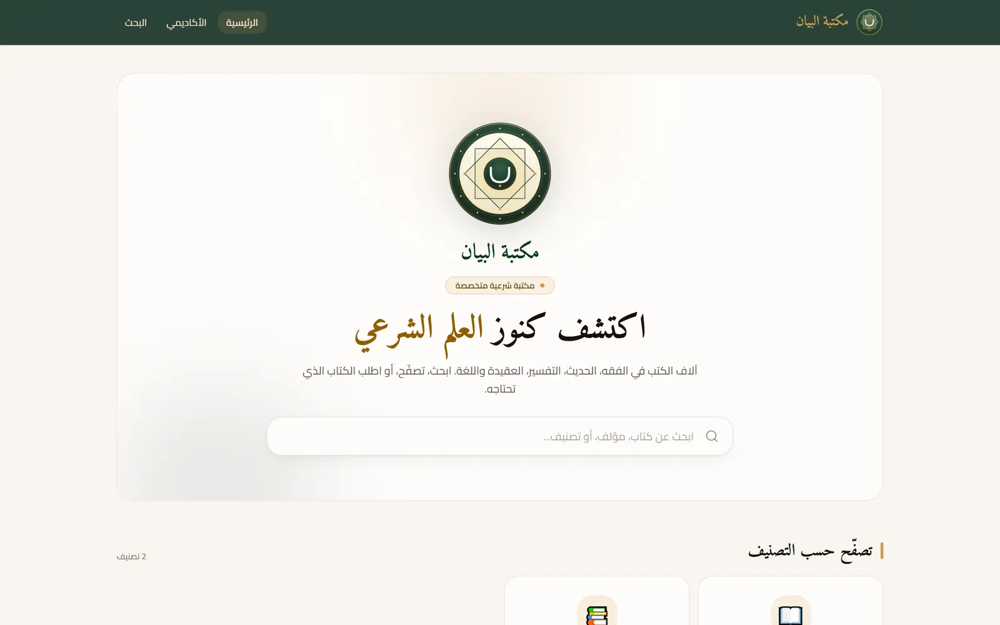
نتائج تظهر أثناء الكتابة بالعنوان أو المؤلف، مع تجاهل الفروق الإملائية العربية (أ/إ/ا، ة/ه، ى/ي).
تصفح حسب تصنيفات المكتبة الحقيقية، مع زر رجوع واضح.
الغلاف وكل صور السلسلة، المؤلف، الناشر، السعر، حالة التوفر، وكتب مقترحة.
نموذج قصير (الاسم، الهاتف، الولاية من 69 ولاية، العنوان) يصل مباشرة إلى لوحة التحكم، ثم يكمل الزبون عبر واتساب.
«اطلب» كتابًا ليس في المتجر: يُسجّل كطلب عميل يمكن تحويله لاحقًا إلى طلب بيع.
خريطة وعنوان المحل في قسنطينة لمن يفضّل الحضور.
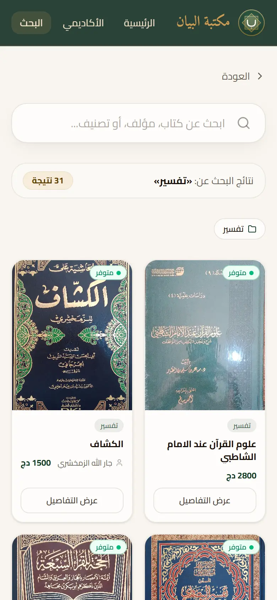
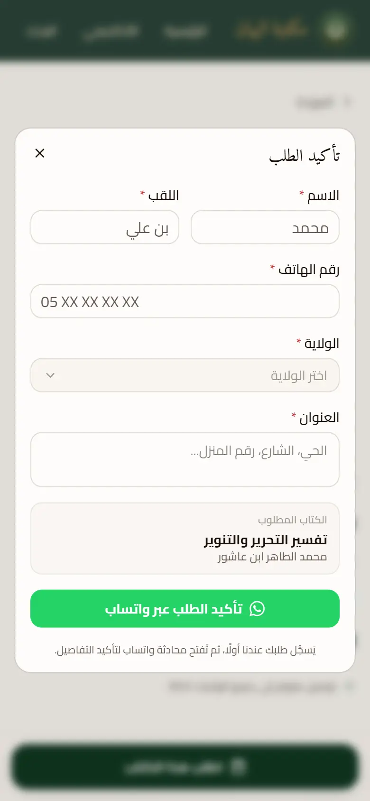
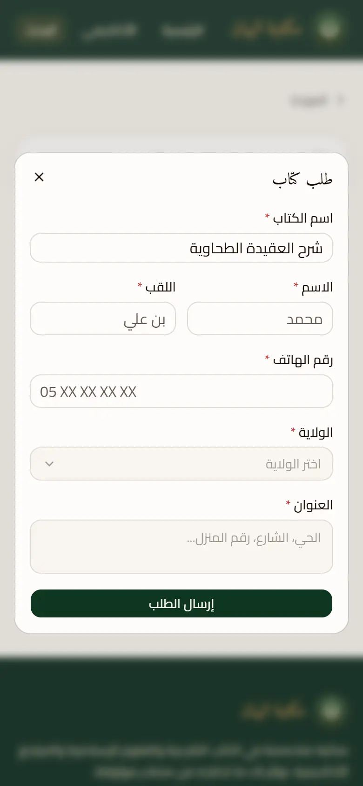
تُفتح لوحة التحكم على عنوان منفصل (/admin) بكلمة سر المكتبة، وتبقى الجلسة صالحة 30 يومًا. القائمة الجانبية تجمع كل الأقسام، وتطوى لتوسيع المساحة، وتتحول إلى قائمة منزلقة على الهاتف.
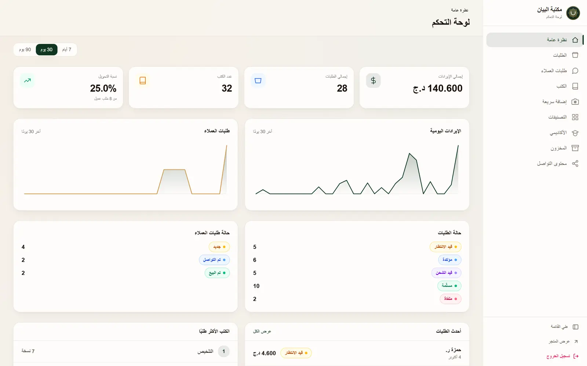
كل طلب يمر بحالات واضحة، ولا تسمح المنصة إلا بالانتقالات المنطقية:
قيد الانتظار ← مؤكدة ← قيد الشحن ← مسلَّمة | ويمكن الإلغاء في أي مرحلة، و«الإرجاع» بعد التسليم
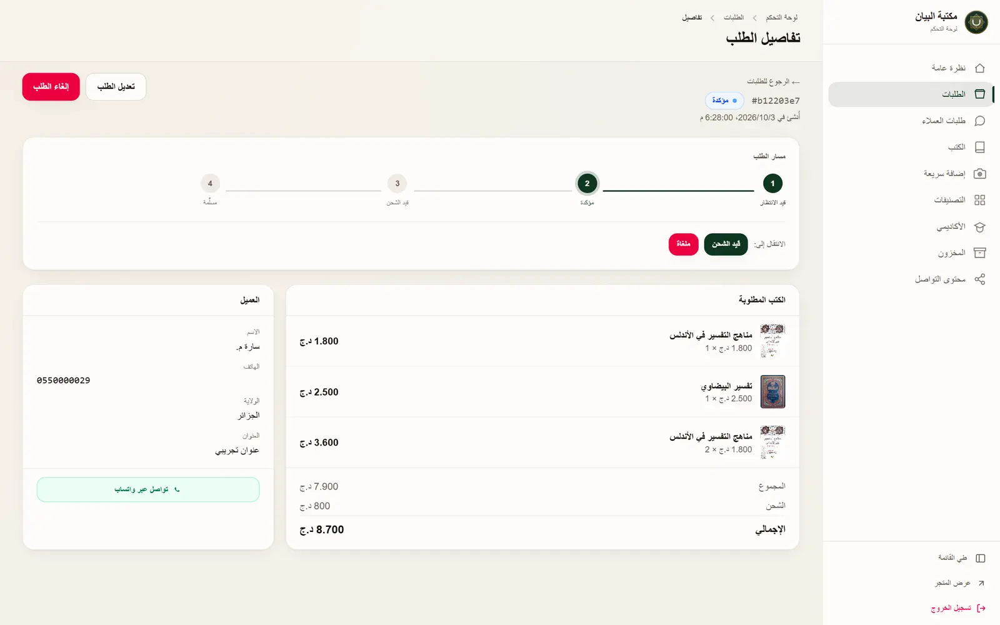
استفسارات الزبائن عن كتب (من المتجر) تظهر هنا بحالاتها: جديد، تم التواصل، تم البيع. زر «تحويل إلى طلب» يُنشئ طلب بيع بالكتب والأسعار في خطوة واحدة.
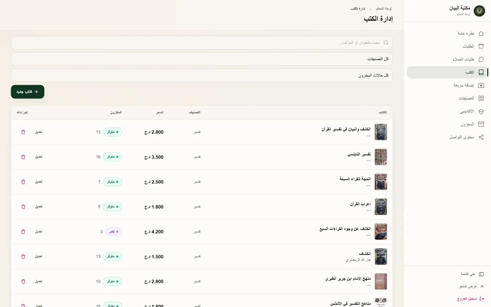
العنوان، المؤلفون، الناشر، التصنيف، البلد، السنة، الطبعة، عدد الأجزاء، ردمك، الوصف، سعر البيع، سعر الشراء (لا يظهر للزبائن أبدًا)، الحالة والمخزون.
عدة صور لكل كتاب (مثلًا كل أجزاء سلسلة). الصورة الأولى هي الغلاف. كل صورة تُدوَّر تلقائيًا وتُحذف منها بيانات الموقع وتُصغّر، مع نسخة مصغّرة سريعة للقوائم.
مصممة للهاتف: صوّر الغلاف، اكتب العنوان والتصنيف، «حفظ ومسح التالي». أسرع طريقة لإدخال رفوف كاملة.
إدارة القوائم المرجعية، ومنع حذف عنصر مستعمل في كتاب.
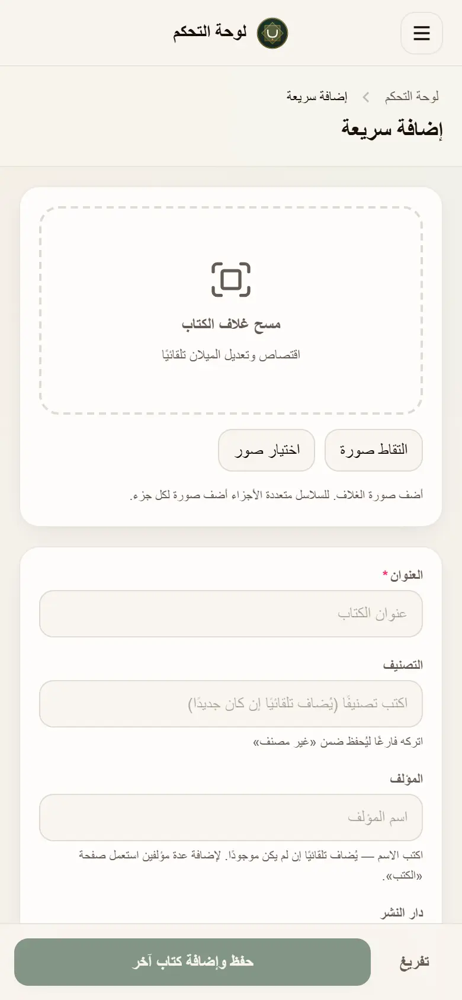
جدول سريع لتعديل حالة كل كتاب (متوفر، حسب الطلب، نادر) وكميته، مع تصفية «المخزون المنخفض فقط» (3 نسخ أو أقل).
| الحدث | أثره على المخزون |
|---|---|
| تأكيد طلب / بيع في المحل | − الكميات المباعة |
| إلغاء طلب مؤكد / إرجاع بيع | + تعود الكتب |
| تسجيل شراء من مورد | + الكميات المشتراة (ويُحدَّث سعر الشراء) |
| إلغاء شراء | − تُسحب الكميات |
| تعديل يدوي (جرد) | الفرق بين القديم والجديد |
لا ينزل المخزون تحت الصفر، وحين يصل إلى صفر تتحول حالة الكتاب إلى «حسب الطلب»، ثم تعود «متوفر» عند وصول نسخ جديدة. كل حركة مسجّلة بتاريخها وسببها: زر «السجل» بجانب كل كتاب.
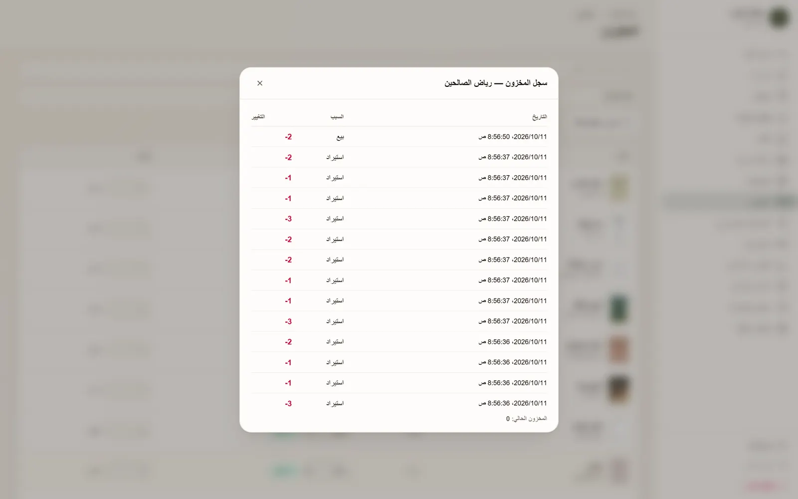
كل المبيعات في سجل واحد: طلبات الموقع والهاتف، البيع في المحل، والمبيعات المستوردة من Excel. لكل بيع «قناة» وطريقة دفع وتخفيض اختياري.
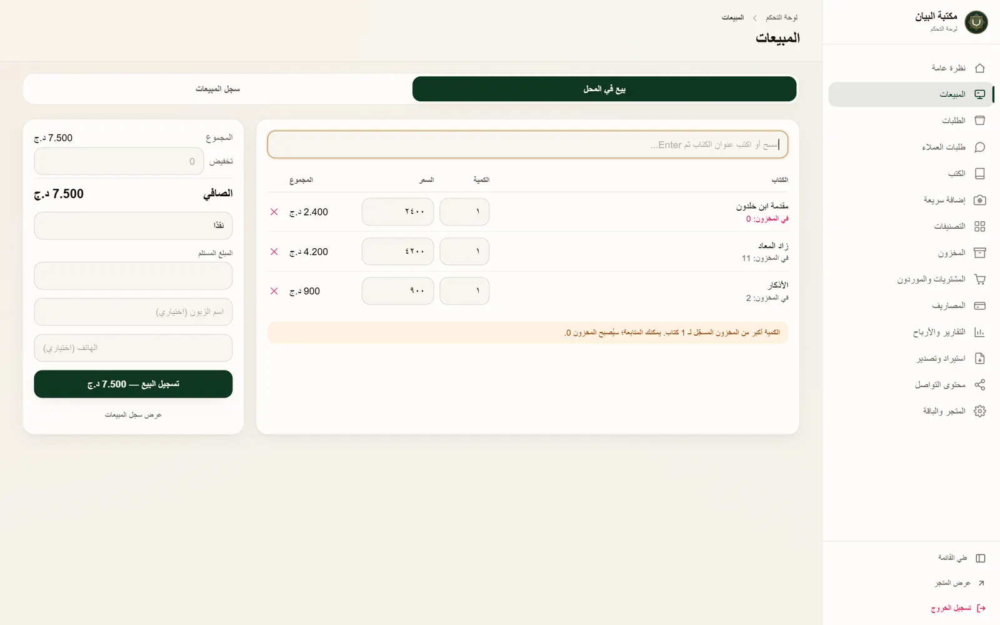
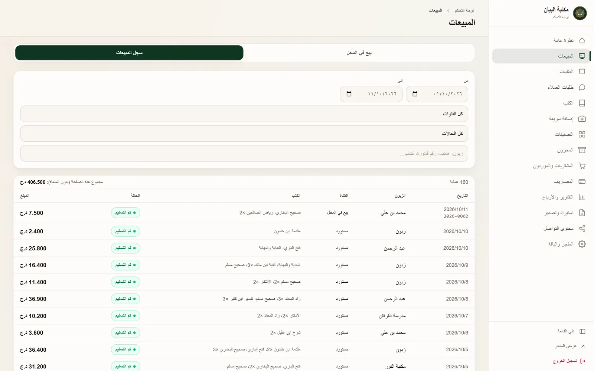
من أي طلب أو بيع: «إصدار فاتورة». تأخذ رقمًا تسلسليًا لكل سنة (2026-0001، 2026-0002…) لا يتغير بعدها. تُطبع من المتصفح أو تُحفظ PDF.
الاسم، العنوان، الهاتف، البريد، والمعلومات القانونية (السجل التجاري RC، NIF، NIS، رقم المادة ART) ونص أسفل الفاتورة، من صفحة «المتجر والباقة».
على بيع مسلَّم يظهر زر «إرجاع»: تعود الكتب إلى المخزون ويخرج البيع من الإيرادات والتقارير.
كل سطر بيع يحفظ سعر شراء الكتاب لحظة البيع، فتبقى الأرباح صحيحة حتى لو تغيّرت الأسعار لاحقًا.
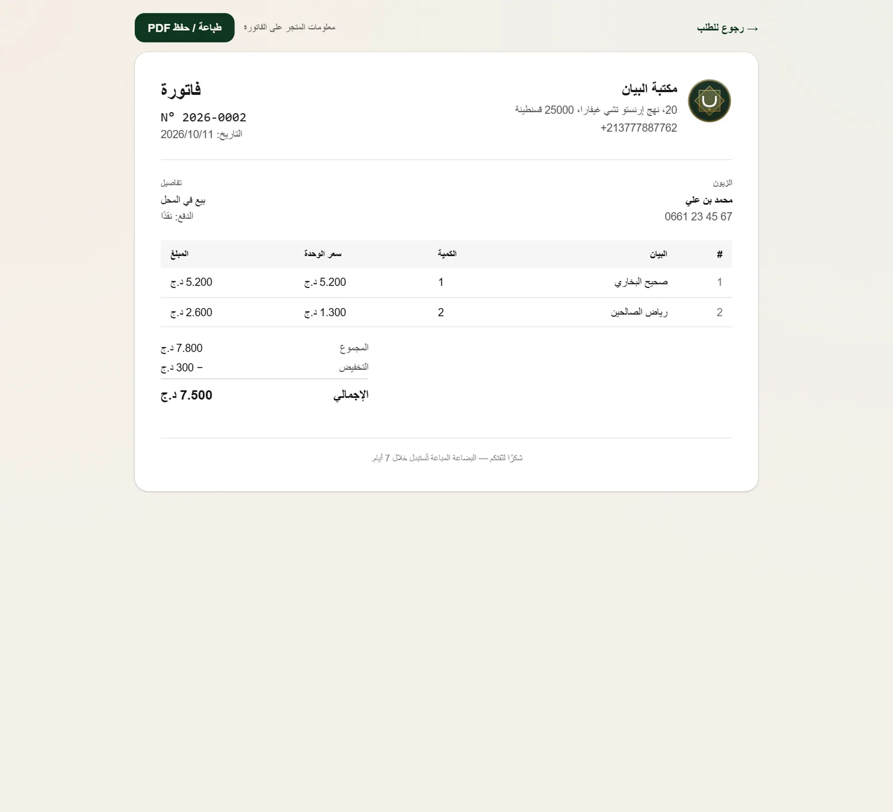
كل وصل استلام من مورد يُسجَّل كعملية شراء: المورد، رقم الوصل، التاريخ، الكتب والكميات وسعر الشراء، مصاريف النقل، والمبلغ المدفوع.
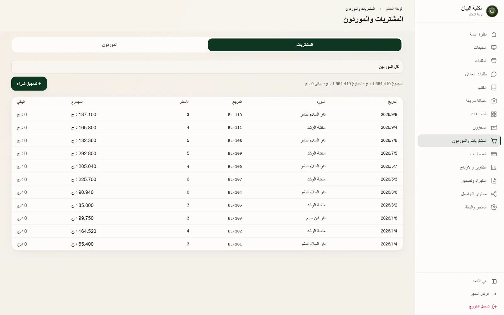
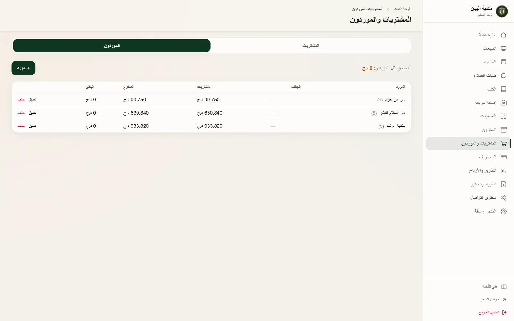
كل ما تصرفه المكتبة غير الكتب: كراء، أجور، نقل وتوصيل، كهرباء وماء وهاتف وإنترنت، إشهار، لوازم، ضرائب ورسوم، وأخرى. لكل مصروف تاريخ ومبلغ وبيان وطريقة دفع. الصفحة تعرض مجموع الفترة وأكبر البنود، وتدخل المصاريف مباشرة في حساب صافي الربح.
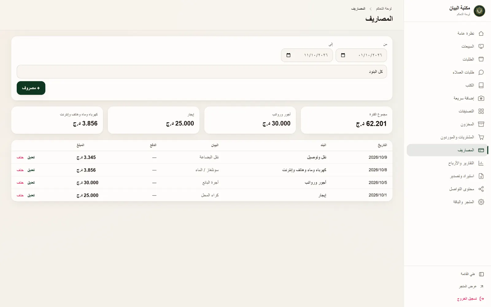
الجواب على السؤال الأهم: هل ربحت هذا الشهر؟ وكم؟
| المؤشر | كيف يُحسب |
|---|---|
| رقم الأعمال | مجموع المبيعات المؤكدة والمشحونة والمسلّمة (بعد التخفيض) في الفترة |
| تكلفة الكتب المباعة | الكمية × سعر الشراء المحفوظ مع كل سطر بيع |
| الهامش الإجمالي | رقم الأعمال − تكلفة الكتب (ونسبته) |
| صافي الربح | الهامش − المصاريف |
| المخزون الراكد | كتب في المخزون لم يُبع منها شيء منذ 90 يومًا |
| قيمة المخزون | بسعر الشراء وبسعر البيع |
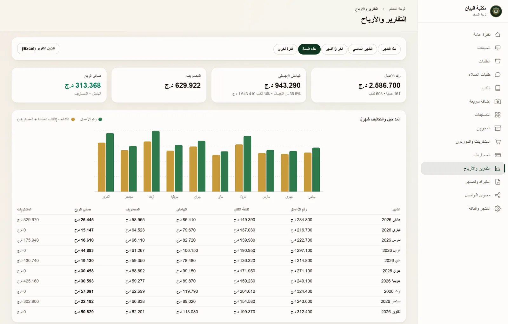
فترات جاهزة (هذا الشهر، الشهر الماضي، آخر 3 أشهر، هذه السنة) أو أي فترة. زر «تنزيل التقرير» يعطي ملف Excel من 6 أوراق. إن كانت بعض المبيعات لكتب بلا سعر شراء، يظهر تنبيه بنسبة التغطية حتى لا يُضلَّل صاحب المكتبة بهامش أعلى من الحقيقة.
أغلب المكتبات تعمل اليوم بملفات Excel. الانتقال إلى المنصة لا يتطلب إعادة كتابة أي شيء: ارفع ملفك كما هو.
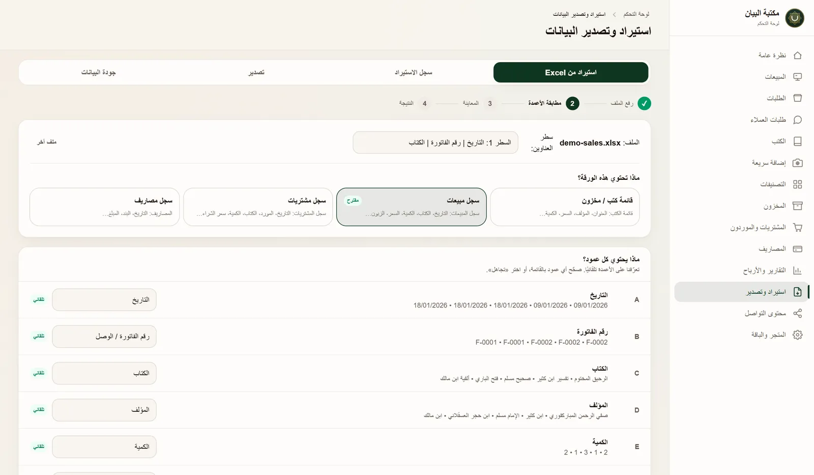
«1 500 دج»، «١٥٠٠»، 1.500,00، تواريخ يوم/شهر/سنة وتواريخ Excel، سنوات هجرية، عدة مؤلفين في خانة واحدة، كلمات التوفر (متوفر / Disponible)، طرق الدفع وبنود المصاريف.
الأسطر تُجمع في عمليات حسب رقم الفاتورة أو الوصل (أو التاريخ والزبون/المورد). الكتب غير الموجودة تُضاف. المخزون لا يتغير إلا إن طلبت ذلك، لأن الجرد الحالي يعكس الماضي أصلًا.
الكتب مع المخزون وقيمته، والطلبات مع الإيرادات الشهرية، والتقارير: كلها إلى Excel. بياناتك لك دائمًا.
لوحة تعرض كم كتابًا بلا سعر أو غلاف أو مؤلف أو تصنيف أو مخزون، وكل رقم رابط لتلك الكتب.
اختر كتبًا (أو كل نتائج بحث أو تصنيف) ونزّلها دفعة واحدة في ملف ZIP: مجلد لكل كتاب فيه الغلاف (وكل صور السلسلة إن أردت)، وبياناته، ونص جاهز للنسخ واللصق في منشور (العنوان، المؤلف، السعر، رابط الكتاب في المتجر)، مع فهرس CSV لكل الكتب. حتى 200 كتاب في الملف.
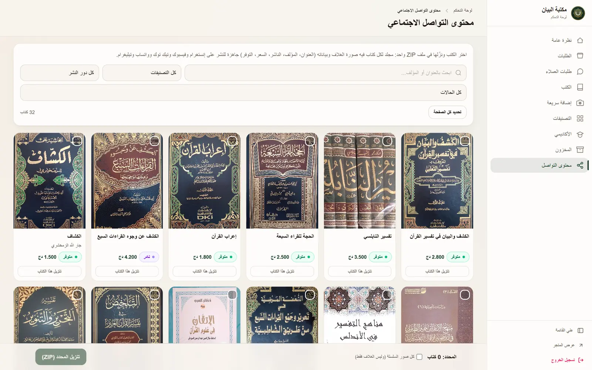
تُباع المنصة لمكتبات أخرى في ثلاث باقات تراكمية. الميزة غير المتوفرة تبقى ظاهرة مع قفل ورسالة تشرح الباقة التي تتضمنها. الأسعار يحددها صاحب المنصة.
| الميزة | أساسي | مكتبة | مؤسسة |
|---|---|---|---|
| المتجر، الطلبات، المخزون، البيع في المحل، تطبيقات الهاتف | ✓ | ✓ | ✓ |
| استيراد وتصدير الكتب بـ Excel | مرة في الشهر | ✓ | ✓ |
| المشتريات والموردون والمصاريف | — | ✓ | ✓ |
| الفواتير | — | ✓ | ✓ |
| التقارير المالية | — | ✓ | ✓ |
| محتوى التواصل الاجتماعي | — | ✓ | ✓ |
| الفهرس الأكاديمي | — | ✓ | ✓ |
| استيراد سجل المبيعات والمشتريات والمصاريف | — | — | ✓ |
| عدد الكتب | 1.000 | 10.000 | غير محدود |
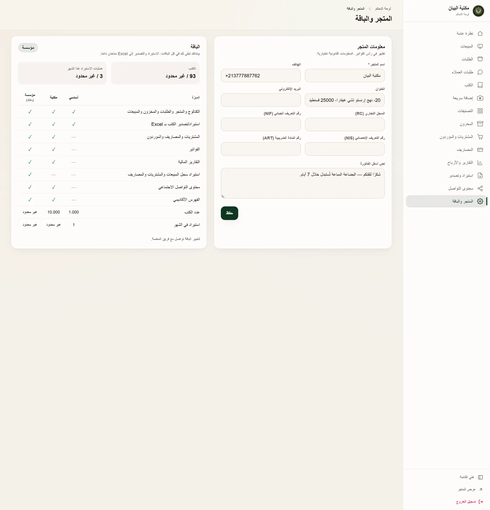
نفس كتالوج المتجر الإلكتروني وبحثه وصفحات الكتب والطلب، بنفس الألوان والخط والشعار.
تسجيل الدخول، متابعة الطلبات وطلبات العملاء وتغيير حالاتها، والإضافة السريعة: تصوير الغلاف بالكاميرا ورفعه مباشرة.
عندي سنوات من المبيعات في Excel، هل أبدأ من الصفر؟ لا: استورد سجل المبيعات والمشتريات والمصاريف لتبدأ التقارير بتاريخك الكامل (باقة مؤسسة).
أخطأت في استيراد ملف. «استيراد وتصدير ← سجل الاستيراد ← تراجع» يلغي كل ما أضافه الملف ويعيد المخزون كما كان.
بعت كتبًا بالخطأ أو أرجعها زبون. افتح البيع واضغط «إرجاع».
الهامش يبدو مرتفعًا جدًا. بعض الكتب بلا سعر شراء؛ أضفه من صفحة الكتاب أو بتسجيل مشترياتك، والتنبيه في التقارير يذكر النسبة.
هل يمكنني مغادرة المنصة؟ نعم، كل البيانات تُصدَّر إلى Excel في أي باقة.